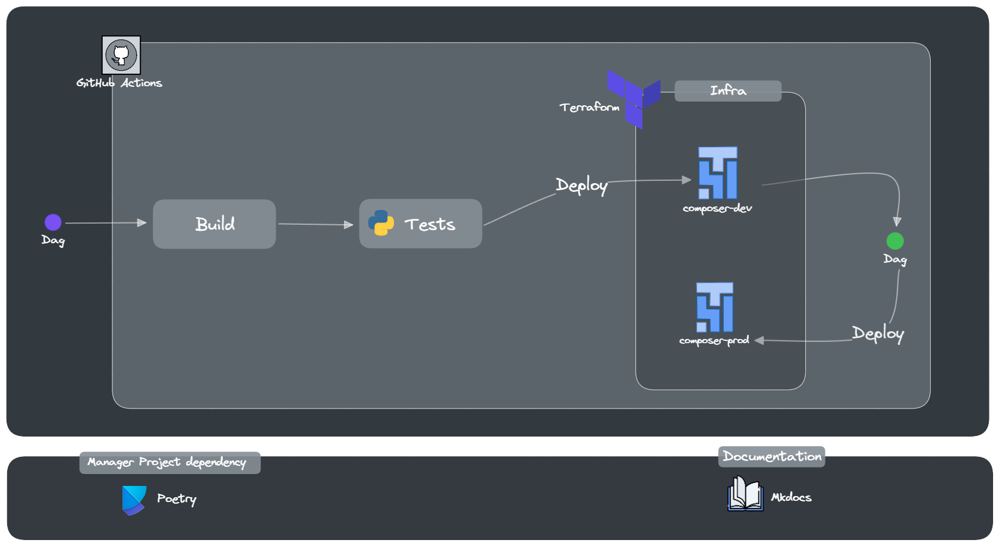

Composer CI/CD
Descrição
Este projeto automatiza o processo de implantação de DAGs do Cloud Composer usando pipelines de CI/CD. Ele envolve a criação de instâncias do Composer via Terraform, configuração de DAGs de exemplo e arquivos de teste utilizando pytest, e configuração de jobs de CI/CD para ambientes de desenvolvimento e produção com github actions.
Arquitetura do Projeto

Infraestrutura do Cloud Composer
Toda a infraestrutura do Cloud Composer é provisionada utilizando o Terraform, o que proporciona uma abordagem automatizada e escalável para configurar e gerenciar ambientes de fluxo de trabalho.
Arquivo main.tf
O arquivo main.tf contém a definição dos recursos necessários para configurar o ambiente do Cloud Composer, incluindo a criação do bucket do Cloud Storage, a configuração da conta de serviço e a definição do ambiente do Composer.
create_composer_instance/main.tf
provider "google" {
project = var.project_id
region = var.region
}
# Create bucket composer
resource "google_storage_bucket" "create_bucket" {
name = var.bucket_name_composer
location = var.region
uniform_bucket_level_access = true
force_destroy = false
}
# Create service account composer
resource "google_service_account" "sa_composer" {
account_id = var.sa_composer_name
display_name = "Create Service Account for Composer Environment"
}
# Attach role worker in service account composer
resource "google_project_iam_member" "attach_role_composer-worker" {
project = var.project_id
role = "roles/composer.worker"
member = "serviceAccount:${google_service_account.sa_composer.email}"
}
# Create composer instance
resource "google_composer_environment" "cluster_config_composer" {
project = var.project_id
name = var.composer_name
region = var.region
provider = google-beta
labels = {env = var.work_environ}
storage_config {
bucket = google_storage_bucket.create_bucket.name
}
config {
software_config {
image_version = var.image_version_composer
airflow_config_overrides = {
core-dags_are_paused_at_creation = "True"
secrets-backend = "airflow.providers.google.cloud.secrets.secret_manager.CloudSecretManagerBackend"
secrets-backend_kwargs = "{'project_id': '${var.project_id}', 'connections_prefix':'airflow-connections', 'variables_prefix':'airflow-variables', 'sep':'-'}"
}
env_variables = {
work_environ = var.work_environ
}
}
workloads_config {
scheduler {
cpu = 1
memory_gb = 2
storage_gb = 2
count = 1
}
web_server {
cpu = 1
memory_gb = 2
storage_gb = 2
}
worker {
cpu = 1
memory_gb = 2
storage_gb = 2
min_count = 1
max_count = 3
}
triggerer {
cpu = 0.5
memory_gb = 0.5
count = 1
}
}
environment_size = "ENVIRONMENT_SIZE_SMALL"
}
}
Arquivo backend.tf
O arquivo backend.tf especifica a configuração do backend para o Terraform, indicando onde armazenar o estado do Terraform.
terraform {
backend "gcs" {
bucket = "personal-terraform-backend"
prefix = "state"
}
}
Criação do bucket
É importante destacar que para utilizar o backend é necessário ter um bucket criado no Google Cloud Storage.
Arquivos variables.tf e .tfvars
Os arquivos variables.tf e .tfvars desempenham um papel fundamental na definição e configuração das variáveis utilizadas para a criação da infraestrutura do Cloud Composer. Enquanto o arquivo variables.tf define as variáveis e seus tipos, o arquivo .tfvars especifica os valores dessas variáveis para cada ambiente, como desenvolvimento (dev) e produção (prod).
Arquivo variables.tf
No arquivo variables.tf, são declaradas todas as variáveis que serão utilizadas no Terraform para configurar a infraestrutura do Cloud Composer. Essas variáveis incluem informações como o ID do projeto, a região, o nome do bucket do Cloud Storage, o nome da conta de serviço e outras configurações necessárias.
Exemplo de declaração de variáveis no arquivo variables.tf
variable "project_id" {
description = "ID do projeto do Google Cloud"
type = string
}
variable "region" {
description = "Região do Google Cloud para implantar o ambiente do Composer"
type = string
}
variable "bucket_name_composer" {
description = "Nome do bucket do Cloud Storage para o ambiente do Composer"
type = string
}
// Outras variáveis necessárias...
Arquivo .tfvars
Já no arquivo .tfvars, são atribuídos os valores específicos das variáveis para cada ambiente, permitindo a personalização e a diferenciação entre ambientes, como desenvolvimento e produção. Isso facilita a manutenção e o gerenciamento de múltiplos ambientes com configurações distintas.
Exemplo de atribuição de valores de variáveis para o ambiente de desenvolvimento:
project_id = "meu-projeto-dev"
region = "us-central1"
bucket_name_composer = "meu-bucket-dev"
Exemplo de atribuição de valores de variáveis para o ambiente de produção:
project_id = "meu-projeto-prod"
region = "us-central1"
bucket_name_composer = "meu-bucket-prod"
Substitua as variáveis
Ao utilizar o projeto, substitua os valores das variáveis dos arquivos com extensão tfvars.
Testes Automatizados
Neste projeto, os testes automatizados são realizados utilizando a biblioteca pytest. Eles são essenciais para garantir a integridade e o funcionamento correto das DAGs (Directed Acyclic Graphs) que compõem o fluxo de trabalho do Cloud Composer.
Tipos de Testes Realizados
Teste de Importação:
Este teste valida a integridade das DAGs verificando se há erros de importação nos arquivos localizados no diretório dags. Ao garantir que as DAGs possam ser importadas corretamente, minimizamos a ocorrência de erros durante a execução das tarefas agendadas.
import os
import pytest
from airflow.models import DagBag
def get_import_errors():
dag_bag = DagBag(include_examples=False)
def strip_path_prefix(path):
return os.path.relpath(path, os.environ.get("AIRFLOW_HOME"))
return [(None, None)] + [
(strip_path_prefix(k), v.strip()) for k, v in dag_bag.import_errors.items()
]
@pytest.mark.parametrize(
"rel_path,rv", get_import_errors(), ids=[x[0] for x in get_import_errors()]
)
def test_import_erros(rel_path, rv):
if rel_path and rv:
raise Exception(f"{rel_path} failed to import with message \n {rv}")
import os
import pytest
from airflow.models import DagBag
def get_dags():
dag_bag = DagBag(include_examples=False)
def strip_path_prefix(path):
return os.path.relpath(path, os.environ.get("AIRFLOW_HOME"))
return [(k, v, strip_path_prefix(v.fileloc)) for k, v in dag_bag.dags.items()]
@pytest.mark.parametrize(
"dag_id,dag,fileloc", get_dags(), ids=[x[2] for x in get_dags()]
)
def test_dag_tags(dag_id, dag, fileloc):
assert dag.tags, f"{dag_id} in {fileloc} has no tags"
Esses testes automatizados são fundamentais para garantir a estabilidade e a confiabilidade do processo de implantação automatizada das DAGs no ambiente do Cloud Composer. Eles contribuem para a detecção precoce de problemas e ajudam a manter a qualidade do código ao longo do tempo.
Possíveis problemas em ambientes Windows
Em ambientes Windows, pode ocorrer de os testes não funcionarem corretamente devido a diferenças de comportamento do Apache Airflow nesse sistema operacional. Um erro comum é o ModuleNotFoundError: No module named 'fcntl', que pode ser causado por incompatibilidades entre o Airflow e o ambiente Windows.
Esses problemas são geralmente relacionados à falta de suporte para certos recursos específicos do sistema operacional Unix, como o módulo fcntl, que não está disponível no Windows.
Recomenda-se verificar a documentação do Apache Airflow para possíveis soluções alternativas ou considerar a execução dos testes em um ambiente Unix-like, como Linux ou macOS, onde o Airflow é mais comumente utilizado e testado.
Fluxo do CI/CD
Pipeline para Ambiente de Desenvolvimento
O pipeline pipeline-composer-dags-dsv.py é responsável por implantar as DAGs no ambiente de desenvolvimento. Ele é acionado automaticamente em eventos de push para a branch develop, permitindo a implantação de alterações em um ambiente isolado de produção. Este pipeline é desencadeado quando ocorrem alterações nos seguintes arquivos ou diretórios:
on:
push:
branches: ["develop"]
paths:
- "dags/*"
- "tests/*"
- "requirements.txt"
- "requirements-test.txt"
- ".github/workflows/pipeline-composer-dags-dsv.yml"
workflow_dispatch:
Este pipeline realiza as seguintes etapas:
1. Clone do Repositório
jobs:
build-and-deploy:
steps:
- uses: actions/checkout@v4
2. Configuração do Ambiente Python e Instalação de Dependências
jobs:
build-and-deploy:
steps:
- uses: actions/setup-python@v5
with:
python-version: '3.10'
- name: Install dependencies
run: |
pip install -r requirements.txt
pip install -r requirements-test.txt
3. Definição da Variável de Ambiente AIRFLOW_HOME
jobs:
build-and-deploy:
steps:
- name: Set AIRFLOW_HOME
run: echo "AIRFLOW_HOME=${AIRFLOW_HOME}" >> $GITHUB_ENV
4. Execução dos Testes Unitários nas DAGs
jobs:
build-and-deploy:
steps:
- name: Run tests
run: |
python -m pytest tests/
5. Autenticação no Google Cloud
jobs:
deploy-to-gcs:
steps:
- uses: google-github-actions/auth@v2
with:
credentials_json: ${{ secrets.GCP_SA_KEY }}
6. Configuração do Cloud SDK
jobs:
deploy-to-gcs:
steps:
- uses: google-github-actions/setup-gcloud@v2
7. Upload das DAGs para o Cloud Storage
jobs:
deploy-to-gcs:
steps:
- run: |
gsutil -m rsync -r -x "__pycache__" dags ${{ env.DAGS_BUCKET_PATH }}
Pipeline para Ambiente de Produção
O pipeline pipeline-composer-dags-prd.py é responsável por implantar as DAGs no ambiente de produção. Ele é acionado automaticamente em eventos de pull request para a branch main, garantindo que apenas as alterações validadas sejam implantadas no ambiente de produção. Este pipeline é desencadeado quando ocorrem alterações nos seguintes arquivos ou diretórios:
on:
pull_request:
branches: ["main"]
paths:
- "dags/*"
- "tests/*"
- "requirements.txt"
- "requirements-test.txt"
- ".github/workflows/pipeline-composer-dags-prd.yml"
Este pipeline realiza as seguintes etapas:
1. Clone do Repositório
jobs:
deploy-to-gcs:
steps:
- uses: actions/checkout@v4
5. Autenticação no Google Cloud e Configuração do Cloud SDK
(Autenticação e configuração são semelhantes aos passos do pipeline de produção)
6. Upload das DAGs para o Cloud Storage
(Semelhante ao passo de upload no pipeline de produção)
Configuração de Segredo e Variáveis no GitHub Actions
Para o funcionamento correto do CI/CD certifique-se de criar uma service account específica para o projeto no Google Cloud Platform e armazená-la no secret do GitHub Actions. Isso é essencial para garantir que o pipeline de CI/CD tenha acesso às credenciais necessárias para interagir com os recursos do GCP. Além disso, não se esqueça de definir as variáveis de ambiente DAGS_BUCKET_PATH_DEV e DAGS_BUCKET_PATH_PROD no GitHub Actions, para especificar os caminhos dos buckets onde as DAGs serão armazenadas nos ambientes de desenvolvimento e produção, respectivamente.
Considerações finais
Leia o README do Repositório
Para obter informações sobre como instalar e utilizar o projeto, não deixe de ler o README no repositório oficial do projeto.
Esta documentação fornece uma visão abrangente do projeto, abordando aspectos como a arquitetura, a infraestrutura, os testes automatizados, os fluxos de CI/CD e muito mais. Esperamos que este guia seja útil para entender e utilizar o projeto de forma eficaz.
Se você tiver alguma dúvida, problema ou sugestão, não hesite em entrar em contato.